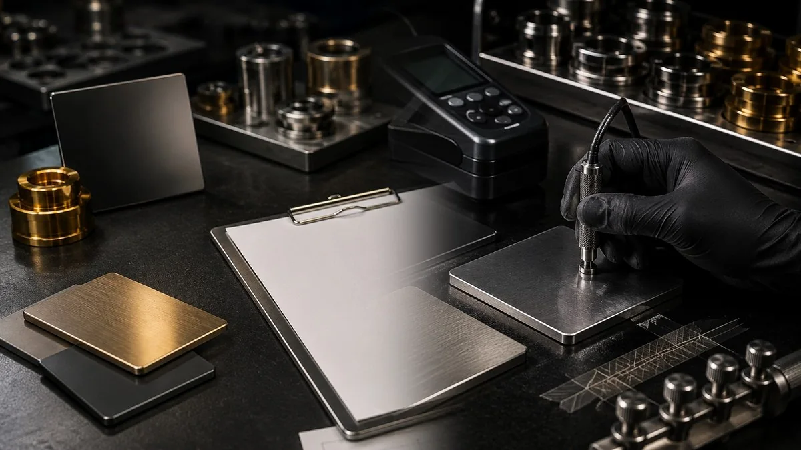

سطح، پولیش و عیبهای ظاهری
برای پروژههایی که کیفیت زیرکار، خطوخش، براقیت یا عیب پوشش مسئله اصلی است.
مقالهها و راهنماهای کاربردی برای شناخت زیرکار، شرایط استفاده، کنترل کیفیت و انتخاب فینیش متناسب با پروژه.

برای شروع، یکی از مسیرهای اصلی را انتخاب کنید تا به خدمات و مقالههای مرتبط برسید.
پوشش PVD برای پروژههایی که ظاهر، شرایط کارکرد و معیار پذیرش باید کنار هم بررسی شوند.
مشاهده جزئیات ←آبکاری نیکلکروم برای فینیش براق و مسیرهایی که جنس پایه، زیرسازی و هدف خوردگی باید مشخص باشند.
مشاهده جزئیات ←پرداختکاری و آمادهسازی سطح برای رسیدن به سطح آینهای، مات یا برسخورده قبل از پوششدهی.
مشاهده جزئیات ←اگر تازه وارد موضوع پوشش و فینیش شدهاید، این سه مقاله ستون را ابتدا بخوانید تا نقش زیرکار، فرآیند و کنترل کیفیت روشنتر شود.
جنس پایه، کاربرد، میزان تماس، شرایط محیط و نوع فینیش مهماند. نمونه مرجع، آمادهسازی سطح و معیار پذیرش باید پیش از تیراژ مشخص شوند.
پولیش روی بافت، انعکاس نور و دیدهشدن عیبهای سطح اثر مستقیم دارد. کیفیت نهایی پوشش به آمادهسازی مناسب همان زیرکار وابسته است.
از راهنمای انتخاب، مقایسه روشها و مطالب کنترل کیفیت شروع کنید؛ سپس بر اساس جنس قطعه، شرایط کار و فینیش هدف به مقالههای تخصصیتر بروید.
اگر مسئله قطعه را میدانید، بهجای جستوجوی پراکنده از یکی از این مسیرها وارد شوید.
برای پروژههایی که کیفیت زیرکار، خطوخش، براقیت یا عیب پوشش مسئله اصلی است.
برای زاماک، سطوح رسانا/نارسانا و عیبهای چسبندگی یا آبکاری.
برای رنگ، نور، تماس دست، یراق و نگهداری فینیشهای نمایان.
برای پروژههایی که بین PVD، آبکاری، پودری یا آنودایز مردد هستند.

اگر قرار است هر روز لمس شود، باید هم زیبا باشد هم مقاوم. این مقاله میگوید چه فینیشی مناسبتر است و چه چیزهایی را قبل از تولید سری چک کنید.
ادامه مطلب ←
اگر مشتری زیر نور نمونهکارها یک چیز میبیند و در خانه چیز دیگر، احتمالاً مشکل از مدیریت نور و مرجع رنگ است نه صرفاً فرآیند.
ادامه مطلب ←
قبل از اینکه همهچیز را گردن دستگاه بیندازید، سه چیز را چک کنید: تمیزی سطح، پولیش، و خروج گاز از قطعه.
ادامه مطلب ←
زاماک اگر درست آماده نشود، آبکاری را با پوسته شدن و حفره جواب میدهد. اینجا مسیر کمریسکتر را میخوانید.
ادامه مطلب ←
اگر کروم کدر شد یا آبکاری پوسته داد، قبل از تغییر وانها مسیر تمیزکاری و فعالسازی را چک کنید.
ادامه مطلب ←
هر دو اسمشان کروم است، اما هدفشان یکی نیست. اگر انتخاب اشتباه کنید، یا هزینه اضافه میدهید یا دوام نمیگیرید.
ادامه مطلب ←
اگر پولیش بد باشد، بهترین پوشش هم معجزه نمیکند. برای فینیش لوکس، زیرکار پادشاه است.
ادامه مطلب ←
اگر نور محیط سخت است یا تماس زیاد دارید، ساتن معمولاً انتخاب منطقیتری است. اما بعضی پروژهها آینهای میخواهند.
ادامه مطلب ←
برنج با یک پرداخت خوب واقعاً لوکس میشود. با یک پرداخت بد، همانقدر سریع افت میکند.
ادامه مطلب ←
آنودایز یکی از روشهای رایج برای آلومینیوم است و میتواند هم حفاظت سطح و هم رنگدهی/فینیش ایجاد کند؛ نتیجه به آلیاژ، آمادهسازی و فرآیند وابسته است.
ادامه مطلب ←
الکتروفورتیک (که در بازار گاهی «فورتیک» هم گفته میشود) یک پوششدهی یکنواخت و ضدخوردگی است که مخصوصاً برای زیرکار صنعتی و تیراژ مناسب است.
ادامه مطلب ←
قطعات روی/گالوانیزه بهدلیل واکنشپذیری و ریسک آلودگی سطحی، نیاز به آمادهسازی دقیق دارند تا PVD یکنواخت و بادوام شود.
ادامه مطلب ←
نیکل-کروم هنوز در بسیاری کاربردها محبوب است. این مقاله تفاوتهای کلیدی آن با PVD را از نظر ظاهر، دوام و شرایط استفاده توضیح میدهد.
ادامه مطلب ←
همه پروژهها PVD نیستند. در این مقاله مسیرهای رایج مثل فورتیک/الکتروفورتیک (E-coat)، آنودایز و اسپری حرارتی را برای انتخاب بهتر مرور میکنیم.
ادامه مطلب ←
رنگ پودری الکترواستاتیک برای مقاومت و پوشش یکنواخت در قطعات فلزی بسیار محبوب است؛ اما برای ظرافتهای لوکس و رنگهای خاص، باید درست انتخاب شود.
ادامه مطلب ←
بسیاری از پوششهای PVD روی سطوح نارسانا هم قابل اعمالاند، اما در برخی شرایط برای کنترل بار/بایاس یا یکنواختی، رساناکردن سطح یا فیکسچر اهمیت پیدا میکند.
ادامه مطلب ←
PP انرژی سطحی خیلی پایینی دارد؛ برای پوششدهی موفق معمولاً به فعالسازی سطح و لایه میانی مهندسیشده نیاز است.
ادامه مطلب ←
پوششهای PVD روی شیشه/کریستال برای جلوههای لوکس، رنگهای خاص و مقاومت سطحی استفاده میشوند؛ انتخاب روش به هدف (تزئینی/کارکردی) وابسته است.
ادامه مطلب ←
پوشش PVD روی ABS ممکن است، اما مسیر اجرا معمولاً به آمادهسازی سطح و لایههای میانی نیاز دارد تا چسبندگی و دوام روی نمونه واقعی ارزیابی شود.
ادامه مطلب ←
روشهای ساده و امن برای حذف لکه و اثر انگشت روی فینیشهای لوکس.
ادامه مطلب ←
چه چیزهایی باعث ماندگاری بهتر رنگ میشود و چگونه انتخاب درست انجام دهیم؟
ادامه مطلب ←
چه اطلاعاتی برای ساخت یک سناریوی اولیه قیمت و بررسی زمانبندی پروژه لازم است.
ادامه مطلب ←
تعریف ساده، مزایا، کاربردها در صنعت، ساختمان و لوکسکاری.
ادامه مطلب ←
راهنمای انتخاب حرفهای بر اساس کاربرد، ظاهر و مقاومت.
ادامه مطلب ←
چربیگیری، پولیش، سندبلاست و نکات کلیدی برای نتیجهی یکنواخت و بادوام.
ادامه مطلب ←
چه فینیشی برای معماری، صنعت و لوکسکاری مناسبتر است؟ نکات انتخاب و نگهداری.
ادامه مطلب ←
چه تستهایی انجام میشود و چرا برای پروژههای صنعتی و ساختمانی حیاتی است؟
ادامه مطلب ←
راهنمای انتخاب پوشش برای دستگیره، اتصالات، پروفیل و قطعات دکوراتیو.
ادامه مطلب ←
راهنمای انتخاب جنس، رنگ و فینیش برای دکوراتیو.
ادامه مطلب ←
روشهای درست تمیزکاری و جلوگیری از کدر شدن.
ادامه مطلب ←
تصمیمگیری سریع برای پروژههای پرتردد و لوکس.
ادامه مطلب ←
طلایی، رزگلد، دودی، مشکی؛ چه زمانی کدام؟
ادامه مطلب ←